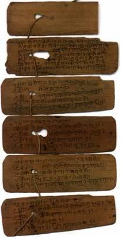

Ở châu Âu thời Trung cổ, các tác phẩm triết học và đa số các tác phẩm văn học đều viết bằng một tử ngữ, quần chúng không hiểu, thì ở Ấn cũng vậy, các tác phẩm triết học và văn học thời cổ điển đều viết bằng tiếng Sanscrit, một ngôn ngữ đã từ lâu lắm không ai nói, nhưng vẫn còn được dùng như một espéranto (thế giới ngữ) trong giới các học giả để trao đổi tư tưởng với nhau[1]. Vì không còn liên hệ tới đời sống của dân tộc, thứ ngôn ngữ văn chương đó lần lần hoá ra cực cầu kì, cổ hủ, rởm; nó không thu nhận những từ ngữ do dân chúng tự nhiên tạo ra, mà muốn thoả mãn nhu cầu dạy giáo lí, nó phải nguỵ tạo thêm dụng ngữ, tới nỗi rốt cuộc tiếng Sanscrit của các triết gia mất hết sự giản dị hùng tráng trong các thánh ca của các kinh Veda mà thành một thứ tiếng kì quái có những từ (mot) dài vô tận y như những con sán ghê tởm trườn hết hàng trên xuống đến hàng dưới[2].
Nhưng vào khoảng thế kỉ thứ V trước Công nguyên, dân chúng miền Bắc Ấn Độ đã biến đổi tiếng Sanscrit thành tiếng Prakrit, cũng gần như người Ý biến đổi tiếng La Tinh thành tiếng Ý; tiếng Prakrit được dùng trong một thời gian để truyền bá đạo Phật và đạo Jaïn, rồi lại biến đổi để thành tiếng Pali, những kinh, sách cổ nhất của đạo Phật hiện nay chúng ta còn giữ được viết bằng tiếng Pali đó. Khoảng cuối thế kỉ thứ X sau Công nguyên, những “Ấn ngữ chuyển tiếp” đó phát sinh ra nhiều thổ ngữ mà thổ ngữ quan trọng nhất là tiếng Hindi. Tới thế kỉ XII, tiếng Hindi chuyển thành tiếng Hindoustani mà nửa Ấn Độ ở miền Bắc đều dùng. Sau cùng bọn xâm lăng Hồi đưa vào tiếng Hindoustani rất nhiều từ ngữ Ba Tư và biến nó thành một thổ ngữ mới, thổ ngữ Urdu. Tất cả những ngôn ngữ đó đều là những ngôn ngữ “Ấn - Nhật nhĩ man” không lan ra khỏi miền Indoustan (miền Bắc); miền Deccan ở cực Nam bán đảo vẫn giữ những cổ ngữ của dân tộc Dravidien như tiếng Tamul[3], Telugu, Kanarese, Malayalam, nhưng tiếng Tamul mới chính là ngôn ngữ văn chương của miền Nam. Thế kỉ XIX, ở Bengale, tiếng Bengali thay tiếng Sanscrit mà thành ngôn ngữ văn chương; nhà kể truyện Chatterjee là Boccace của miền Bengale, còn thi sĩ Rabindranath Tagore là Pétrarque[4] của miền đó. Hiện nay ở Ấn còn cả trăm ngôn ngữ khác nhau. Còn phong trào Swaraj[5] thì dùng ngôn ngữ của bọn xâm lăng.
Ngay từ sớm lắm, người Ấn đã nghiên cứu về nguồn gốc, diên cách[6], sự liên quan và cách tổ hợp các từ ngữ. Từ thế kỉ thứ IV trước Công nguyên, họ đã tạo ra môn ngữ pháp[7], và Panini có lẽ là nhà ngữ pháp vĩ đại nhất của mọi thời. Các công trình nghiên cứu của Panini, của Patanjali (khoảng 150 sau Công nguyên) và của Bhartrihari (khoảng 650) đã đặt nền tảng cho ngôn ngữ học; và môn học rất thích thú về cách thức các từ ngữ sinh ra lẫn nhau, sở dĩ xuất hiện được phần lớn là nhờ một sự phát kiến mới về tiếng Sanscrit hồi tương đối gần đây.
Như chúng tôi đã nói, thời Veda, người Ấn ít dùng chữ viết. Thứ cổ tự Kharosthi xuất hiện khoảng thế kỉ thứ V trước Công nguyên và phỏng theo chữ Sémitique [của các dân tộc cổ ở Syrie, Mésopotamie]. Trong các thiên anh hùng ca và các kinh sách đạo Phật đã thấy nhắc tới những người chuyên làm nghề viết chữ[8]. Thời đó họ viết trên lá cây[9] hay vỏ cây, bút là một cây sắt đầu nhọn; trước hết người ta phải dùng một cách làm cho vỏ cây hoá dai hơn, rồi dùng đầu cây sắt người ta vạch thành chữ chìm lên vỏ cây, sau cùng đổ một thứ mực lên, một lát sau, người ta chùi một lượt, mực chỉ còn thấm vào các nét gạch lên vỏ cây, tức các nét chữ. Chính người Hồi đã du nhập giấy viết vào Ấn, vào khoảng 1.000 sau Công nguyên, nhưng mãi tới thế kỉ XVII, giấy mới hoàn toàn thay thế vỏ cây. Người ta lấy dây xâu vào những trang bằng vỏ cây đó, đóng thành những cuốn sách cất trong các thư viện mà người Ấn gọi là “kho tàng của nữ thần Ngôn ngữ”. Có những tùng thư vĩ đại bằng vỏ cây đó thoát được sự tàn phá của chiến tranh và thời gian mà lưu truyền tới ngày nay[10].
Các trường học – Các phương pháp dạy học – Các đại học – Sự giáo dục của người Hồi – Quan niệm của một hoàng đế về giáo dục.
Cho tới thế kỉ XIX, chữ viết đóng một vai trò rất nhỏ nhoi, vô nghĩa. Có lẽ các tu sĩ nghĩ rằng để cho đại đa số tín đồ đọc được các Thánh kinh, là điều không có lợi cho họ [tức các tu sĩ]. Đọc sử Ấn Độ, đi ngược thời gian, chúng ta thấy từ hồi nào, sự giáo dục luôn luôn do các tu sĩ đảm nhiệm. Mới đầu trường chỉ mở để dạy con trai các Bà La Môn, lần lần cho thêm trẻ các tập cấp khác vô học, tập cấp cao được thu nhận trước, và hiện nay tập cấp “tiện dân” vẫn chưa được thu nhận. Mỗi làng có một ông thầy do quĩ công đài thọ; trước khi người Anh tới, riêng miền Bengale có khoảng 80.000 trường “bản xứ” như vậy, tính ra trung bình cứ bốn trăm người dân thì có một trường[11]. Hình như dưới triều đại Açoka, tỉ số người mù chữ thấp hơn ngày nay.

Sách lá cọ
(http://www.columbia.edu/cu/lweb/inp/southasia/cuvl/
indicmss/palm.html)
Trẻ em từ năm tới tám tuổi tới học trường làng, học từ tháng chín tới tháng hai. Bất kì môn gì cũng thấm nhuần giáo lí; nhiều khi người ta chỉ cho học sinh học thuộc lòng, các bài học thuộc lòng đều lấy trong các kinh Veda; tư cách con người quan trọng hơn là trí tuệ và giáo dục chú trọng nhất tới kỉluật[12]. Hình như các ông giáo không dùng đến roi hoặc một thể hình nào khác, họ rán tập cho trẻ có những thói tốt về phép cư xử, cách sống, cách giữ gìn thân thể cho sạch sẽ. Tám tuổi, người ta giao trẻ cho một guru, một giáo sư riêng tựa như sư phó; trẻ sống với guru nếu có thể được cho tới hồi hai mươi tuổi, có bổn phận giúp đỡ thầy trong mọi việc lặt vặt, phải tiết dục, từ tốn, giữ mình cho sạch sẽ, cữ ăn thịt. Lúc đó mới bắt đầu học năm môn: ngữ pháp, nghệ thuật và nghề nghiệp, y học, luận lí học và triết học. Sau cùng thanh niên rời thầy ra đời, nhớ kĩ lời thầy dạy rằng sự giáo dục, một phần tư là công của thầy, một phần tư là công của chính mình, một phần tư nữa là nhờ bạn, và phần tư cuối cùng là do kinh nghiệm trong đời.
Nhiều khi, vào hồi mười sáu tuổi, thanh niên rời thầy để lại học trong một trường đại học. Những trường đại học này làm vẻ vang cho Ấn Độ thời Thượng cổ và thời Trung cổ, như các trường Bénarès, Taxila, Vidarbha, Ajanta, Ujjain, Nalanda. Thời Phật Tổ, Bénarès là đồn luỹ của chính giáo Bà La Môn mà nay cũng vậy. Khi vua Hi Lạp Alexandre xâm chiếm Ấn, Taxila nổi tiếng khắp châu Á là nơi có nhiều nhà bác học nhất của Ấn, trường Y khoa ở đó rất danh tiếng; Ujjain thì nổi tiếng về các nhà thiên văn; Ajanta nổi tiếng về các giáo sư dạy nghệ thuật. Ngày nay nhìn mặt tiền một toà nhà đã điêu tàn của trường
Người Hồi tàn phá gần hết các tu viện đạo Phật cũng như đạo Bà La Môn ở Bắc Ấn Độ. Học viện Nalanda bị san phẳng năm 1197 và bao nhiêu tu sĩ đều bị giết hết; nhìn những di tích còn lại chúng ta không thể nào tưởng tượng nổi thời xưa đời sống ở Ấn Độ phong phú ra sao. Mà những kẻ tàn phá đó đâu phải là một dân tộc hoàn toàn dã man; họ cũng đã biết yêu những cái đẹp và biết tạ khẩu những cớ này cớ khác về tôn giáo ra vẻ thành kính lắm để biện hộ cho những cuộc cướp bóc của họ chứ. Khi người Mông Cổ thống trị Ấn, cũng đem vô Ấn một nền văn minh tấn bộ lắm, nhưng quan niệm hẹp hòi; họ yêu văn thơ cũng ngang với võ bị và có tài tấn công một thành cũng như có tài gieo vần. Người Hồi cho giáo dục một tính cách hoàn toàn cá nhân; gia đình nào giàu có thì đón một thầy dạy riêng cho con cái; đúng là một quan niệm quí phái. Họ cho giáo dục là một xa xí phẩm, đôi khi rất có ích cho một chính khách hay một con buôn, một nhà kinh doanh, nhưng có thể nguy hại cho quốc gia, gây rắc rối cho xã hội nếu truyền bá cho kẻ nghèo, những kẻ phải suốt đời chịu cái thân phận hèn mọn. Một trong những thầy học cũ của vua Aureng-Zeb có lần xin ông phong cho một chức quan nhàn hạ, lời đáp của ông đủ cho ta thấy lối dạy học thời đó ra sao. Bernier nghe người ta kể lại câu chuyện đó, rồi chép lại như sau:
Nhà thông thái Mullah-Gy[13], ông tới cầu ta điều chi đây? Cầu ta phong cho ông chức đại thần ở triều ư? Nếu trước kia ông dạy cho ta một cách đàng hoàng thì điều thỉnh nguyện đó rất hợp lí vì ta có tấm lòng của một đứa trẻ ngoan ngoãn, mang ơn thầy học cũng bằng hay hơn là mang ơn cha; nhưng ông có dạy bảo cho ta được điều gì quí báu không? Trước hết ông bảo ta rằng tất cả cái châu Frangistan (châu Âu) đó chỉ là một đảo nhỏ mà quốc vương lớn nhất xưa kia là vua Bồ Đào Nha, rồi sau tới vua Hoà Lan, rồi sau tới vua Anh; còn những vua khác như vua Franca (Pháp), vua Andalous[14], ông cho chỉ như bọn rajah nhỏ của mình, như vậy ông muốn cho ta hiểu rằng các vua Houmayou, Ekbar, Jehan Guyre, Shah Jehan[15], giàu có, uy quyền nhất thế giới, làm chủ thế giới; rằng Ba Tư, Usbec, Kach-guer, Tatar và Catay-Pégu (tức Thái Lan), Tchine và Machine[16] chỉ nghe thấy nói tới tên các vua Indoustan cũng run lên cầm cập rồi; cái môn địa lí của ông thật tuyệt! Đáng lí ra ông phải dạy cho ta phân biệt được đúng các quốc gia trên thế giới đó, cho ta biết rõ sức mạnh của họ ra sao, thắng được họ cách nào, phong tục, tôn giáo, chính trị của họ ra sao, họ mưu tính những gì; và dạy cho ta đọc kĩ lịch sử để biết các nước đó lập quốc gia ra sao, thịnh vượng rồi suy vi ra sao; do những biến cố, lỗi lầm nào của họ mà xảy ra những cuộc đại biến, những cuộc cách mạng đó. Ông chỉ dạy qua loa cho ta tên của các tiên vương, những đấng sáng lập ra đế quốc này, mà không cho ta biết đời các đấng đó, công lao lập quốc vẻ vang của các đấng đó. Ông đã dạy ta biết đọc và biết viết tiếng Ả Rập; ta mang ơn ông lắm, đã làm cho ta mất bao nhiêu ngày giờ học một ngôn ngữ cần mười, mười hai năm đèn sách mới thông thạo được, như thể ông nghĩ rằng một hoàng tử thì phải là một nhà ngữ pháp học hoặc một nhà luật học, rồi lại phải học thêm những ngôn ngữ khác ngoài những ngôn ngữ của các lân bang; mà thì giờ của một hoàng tử quí báu quá, có biết bao điều khác rất quan trọng phải học cho sớm. Cái lối học từ ngữ đó buồn tẻ, khô khan, tốn công mà lại không thích hợp, làm cho bộ óc nào mà chẳng chán ngấy rồi hoá mụ đi!
Bernier bảo: “Đấy, Aureng-Zeb có giọng bực tức như vậy đấy, nhưng vài nhà thông thái, hoặc vì muốn nịnh ông, hoặc vì ghen ghét Mullah-Gy, hoặc vì một lí do nào khác, loan truyền tin rằng nhà vua đã chịu ngưng cho đâu, nói lãng qua nhiều chuyện khác để cười cợt, rồi lại mắng tiếp Mullah”.
Ông không biết rằng tuổi thơ, kí tính thường rất mạnh, nếu khéo dạy dỗ thì có thể thu nhập được cả ngàn phép tắc tốt đẹp, cả ngàn tri thức ích lợi, nó khắc sâu vào trí óc suốt đời, làm cho tinh thần cởi mở, cao thượng để sau này thi hành những việc lớn, ông không biết vậy ư? Luật pháp, kinh kệ và khoa học, học bằng tiếng mẹ đẻ của chúng ta chẳng dễ dàng hơn, hiểu kĩ hơn là học bằng tiếng Ả Rập ư? Ông bảo với phụ vương Shah Jehan rằng ông dạy triết học cho ta; chắc phụ vương còn nhớ trong mấy năm ông giảng cho ta về những chuyện trên trời, những chuyện chẳng thoả mãn trí óc con người chút nào, mà cũng chẳng dùng được gì trong đời sống, toàn là những chuyện hão huyền, khô khan chỉ được mỗi cái điểm quí này là rất khó hiểu mà lại rất mau quên, làm cho phát ngấy lên, óc mụ đi, thành con người cố chấp không ai chịu nổi. Ta còn nhớ rõ sau khi ông đem cái môn triết đẹp đẽ của ông đó giảng cho ta không biết mấy năm trời, ta chỉ còn nhớ được vô số những triết ngữ dã man, tối tăm, làm cho những óc thông minh nhất cũng phải sợ, rối trí và chán ngắt; những triết ngữ mà những kẻ nào tạo ra đó chỉ để che dấu cái tự cao tự đại, cái ngu xuẩn của những con người như ông, những người muốn loè đời rằng cái gì mình cũng biết, rằng những từ ngữ tối tăm, hàm hồ đó, chứa những tư tưởng vĩ đại, những huyền bí lớn lao mà chỉ bọn họ hiểu nổi. Giá ông [đừng dạy những cái hão huyền đó mà] dạy cho ta cách lí luận để ta lần lần quen đưa ra những lí lẽ vững vàng; giá ông chỉ cho ta những phép tắc, những lời giáo huấn đẹp đẽ để nó nâng cao tâm hồn lên khỏi những chìm nổi của đời người, lúc nào cũng bình thản, không gì lay chuyển nổi, khi lên thì không vênh vênh tự đắc, lúc xuống thì không rầu rĩ, hèn nhát; giá ông khéo dạy cho ta biết bản thân chúng ta ra sao, phép tắc chính của vạn vật là gì, và giúp ta nhận định được sự vĩ đại của vũ trụ, sự biến chuyển và trật tự huyền nhiệm của các thành phần vũ trụ; giá ông dạy cho ta cái triết lí đó thì có phải là ta mang ơn ông vô cùng không, hơn vua Alexandre mang ơn Aristote, và bổn phận của ta là tạ ơn ông hơn Alexandre tạ ơn Aristote nữa. Con người nịnh bợ kia, sao không dạy cho ta một chút gì thật là cần thiết cho một ông vua như vậy, cho ta biết bổn phận vua tôi đối với nhau ra sao? Ít nhất thì ông cũng phải nghĩ rằng một ngày nào đó ta phải dùng đường gươm lưỡi kiếm để bảo vệ cái mạng ta và tranh ngai vàng với anh em ta chứ? Đó chẳng phải là số phận của hết thảy các con vua ở xứ Indoustan này ư? Vậy mà có bao giờ ông chịu khó dạy cho ta thuật tấn công một thành, thuật đem quân nghênh chiến? Và ta đã phải mất công học hỏi những người khác! Thôi, về vườn đi, mai danh ẩn tích ở quê hương ông đi, đừng cho thiên hạ biết ông bây giờ là ai, sau này là ai nữa[17].
Anh hùng trường ca Mahabharata – Lịch sử bộ đó – Hình thức – Trường ca Bhagavad-Gita – Siêu hình học về chiến tranh – Cái giá của tự do – Trường ca Ramayana – Lâm tuyền tình ca – Vụ cướp nàng Sita – So sánh anh hùng ca Ấn Độ và anh hùng ca Hi Lạp.
Ngoài các trường làng và trường Đại học ra, Ấn Độ còn dùng những phương tiện khác để giáo dục quần chúng. Vì chữ viết ở xứ đó không được coi trọng như các nền văn minh khác, cho nên sự truyền khẩu là phương tiện chính để bảo tồn và truyền bá lịch sử cùng di sản văn học của dân tộc; nhờ cách kể truyện, ngâm vịnh trước công chúng mà phần di sản tinh thần quí báu nhất của họ được truyền bá trong dân gian. Hồi xưa ở Hi Lạp có những người kể chuyện vô danh truyền bá các truyện Iliade và Odysée; ở Ấn Độ cũng vậy, có hạng người chuyên kể truyện-dạo đi khắp nơi, từ cung đình tới làng xóm hẻo lánh, kể những anh hùng ca cứ mỗi thời một dài thêm, một lớn ra mà trong đó các người Bà La Môn đem chất vào cả cái kho tàng truyền thuyết dân gian[18].
Một học giả Ấn bảo rằng anh hùng ca Mahabharata là “tác phẩm tưởng tượng vĩ đại nhất của châu Á” và ông Charles Eliot cũng khen “bộ đó là một trường ca hay hơn Iliade”[19]. Về một khía cạnh nào đó lời phê phán đó đúng. Hồi đầu (khoảng 300 trước Công nguyên), Mahabharata chỉ là một bài ca trung bình có tính cách tự sự, rồi lần lần mỗi thế kỉ tăng thêm nhiều chi tiết mới, nhiều đoạn nghị luận thu hút trường ca Bhagavad-Gita và cả một phần truyện Rama (một trong những hậu thân của thần Vichnou), rốt cuộc ngày nay nó dài tới 107.000 đoạn[20] gồm những câu thơ tám cước, nghĩa là dài gấp bảy lần cả hai bộ Iliade và Odysée gom lại. Các tác giả của bộ đó nhiều vô kể: truyền thuyết cho rằng “Vyasa” là tác giả, mà tên đó có nghĩa là người sưu tập. Cả trăm thi sĩ đã góp công viết, cả ngàn người đã góp sức sửa chữa, tô chuốt, rồi tới triều đại các vua Gupta (khoảng 400 sau Công nguyên), các Bà La Môn lại đưa thêm những ý về tôn giáo và luân lí của họ vô trường ca đó mà kì thuỷ nguồn cảm hứng rõ ràng là của tập cấp chiến sĩ, thành thử tạo cho nó cái kích thước khổng lồ như ngày nay.
Đầu đề chính có vẻ không hợp cho việc dạy giáo lí vì vốn là một truyện bao động, cờ bạc, chiến tranh. Ngay từ cuốn đầu, ta thấy xuất hiện nàng Shakunlata kiều diễm (sau nàng thành nhân vật chính trong bi kịch nổi danh đó của Ấn) và người con trai anh dũng của nàng tên là Bharata. Bharata là thuỷ tổ của các đại bộ lạc Bharata (do đó mà trường ca có tên là Mahabharata)[21], Kuru và Pandava mà những cuộc chiến đấu đổ máu là mối dây liên lạc – đôi khi đứt rồi nối – cho toàn truyện. Yudhishthira, vua bộ lạc Pandava đặt cả của cải, đạo quân, giang sơn, anh em, sau cùng là hoàng hậu Draupadi vào một canh bạc với vua bộ lạc Kuru; vua Kuru dùng những con thò lò gian lận nên thắng, và theo lời giao hẹn, bộ lạc Pandava phải bị đày ra khỏi tổ quốc mười hai năm, rồi sẽ được trở về làm chủ giang sơn như cũ. Hết hạn, bộ lạc Pandava nhắc bộ lạc Kuru giữ lời hứa, bộ lạc Kuru làm thinh, thế là hai bên choảng nhau. Bên nào cũng kiếm đồng minh, thành thử gần hết Bắc Ấn lâm vào cảnh binh đao[22]. Trong 18 ngày – kể trong năm cuốn – họ chém giết nhau như điên; cả bộ lạc Kuru bị giết hết, và bộ lạc Pandava chỉ còn sống sót được một số ít, vị anh hùng Bhishma một mình giết 100.000 người trong mười ngày; theo thi sĩ chép lại truyện đó thì tổng số người bị giết lên tới mấy trăm triệu. Giữa cảnh đổ máu đó, hoàng hậu Gandhari, vợ của vua Kuru đui tên là Dhrista-rashtra, gào thét kinh khủng khi thấy những con kên kên rỉa thây con trai bà, hoàng tử Duryodhan.
Rất mực tiết hạnh, nhân từ, thực là một hoàng hậu và một người vợ hoàn toàn,
Bà Gandhari đứng uy nghi, trên một chiến trường
Đầy những sọ tóc dính bết, những tay chân rời thân thể.
Mà đất thì đen lại vì thấm máu…
Trên cảnh tàn sát đó, vang lên tiếng tru kéo dài của những con chó rừng chuyên ăn thây ma,
Tiếng vỗ cánh rùng rợn của bầy quạ đen và kên kên.
Không khí đầy những con Pishacha[23] tục tỉu uống máu,
Và những con Raksha đói xé thây các chiến sĩ ra từng khúc,
Người ta dắt vị lão vương qua cảnh chém giết, chết chóc đó;
Các phụ nữ bộ lạc Kuru run rẩy đi giữa đám thây ma nhiều vô kể.
Và một tiếng rú thống khổ vang trên cánh đồng mênh mông,
Khi họ tìm thấy thây của con, của cha, của chồng họ,
Khi họ thấy bầy chó sói trong rừng ăn thịt các chiến sĩ,
Y như những kẻ lang thang ăn đêm, rình mò dưới ánh sáng ban ngày.
Họ khóc lóc rên rỉ vang cả chiến trường u ám.
Chân yếu ớt của họ lảo đảo, họ té xuống đất,
Đau khổ quá, họ không nghĩ gì tới sống nữa,
Họ ngất đi, tưởng như chết rồi, và cánh đồng yên lặng được một chút
Rồi một tiếng thở dài não nuột như xé ruột bà Gandhari,
Liếc mắt thấy các công chúa lo lắng, rầu rĩ, bà thưa với thần
“Ngài nhìn các con gái đau khổ của tôi này, quả phụ của dòng họ Kuru,
Chúng khóc người thân của chúng này, như chim ưng mái khóc chim ưng trống.
Coi những nét mặt hãi hùng của chúng, thấy lòng yêu chồng, con của chúng ra sao.
Coi chúng lang thang hoài giữa đám chiến sĩ tử trận kìa:
Mẹ thì ghì thây con trai như thản nhiên ngủ say,
Vợ thì cúi xuống khóc chồng, lệ tuôn không ngớt…”
Hoàng hậu Gandhari đương rầu rĩ thưa với thần Krishna như vậy,
Thì mắt bà ngơ ngác tìm thấy thây con trai của bà là Duryodhan,
Bà bỗng thống khổ vô cùng, mê man, không còn biết gì nữa,
Như một gốc cây bị cơn dông bứng gốc, bà té bất tỉnh trên đất.
Khi hồi tỉnh, bà lại đau xót ngó chỗ
Con trai bà, thân thể đầy máu, ngủ dưới vòm trời.
Rồi bà ôm lấy Duryodhan, ghì chặt vào lòng,
Mà nức nở khóc, ngực phập phồng, toàn thân run rẩy,
Lệ bà trào ra như mưa hè, ướt đẫm cái đầu cao quí của con trai,
Cái đầu còn đeo một tràng hoa chưa héo, tràng hoa niska đỏ rực.
“Khi con trai quí của tôi sắp ra trận, nó còn bảo tôi:
Khi con bước lên chiến xa, má chúc con vui vẻ khải hoàn nhé.
Tôi bảo con trai quí của tôi, Duryodhan: Trời phù hộ cho con bình an.
Yato dharma stato jayah – tài giỏi là phải thắng.
Thế là nó hăng hái ra trận, sự dũng cảm của nó đã chuộc hết tội lỗi của nó.
Bây giờ nó ở thiên cung cùng với các chiến sĩ một lòng với tổ quốc.
Tôi không khóc Duryodhan nữa, nó đã chiến đấu và chết vinh dự như một quốc vương,
Nhưng ai thấu được nỗi đau lòng của chồng tôi ra sao?...
Nghe kìa, tiếng tru rùng rợn của chó rừng ăn thây ma; coi kìa bầy chó sói rình mồi.
Trước kia, những thiếu nữ giàu sang, giọng hát du dương, canh cho con trai tôi ngủ.
Nghe kìa, bầy kên kên ghê tởm mỏ đầy máu, vỗ cánh trên các thây ma.
Những thiếu nữ phe phẩy cái quạt bằng lông pankha chung quanh ngự sàng của Duryodhan…
Coi kìa, quả phụ quí phái, cao thượng của Duryodhan có vẻ hãnh diện về con trai là Lakshman.
Hoàng hậu trẻ và đẹp đó, như một bàn thờ bằng vàng ròng,
Bây giờ không còn được chồng ôm ấp, được con trai quàng cổ nữa,
Đương tuổi xuân đẹp đẽ như vậy mà phải sống một đời đau khổ, tàn tạ.
Lòng sắt đá của tôi đã bị nỗi thống khổ đè nặng, thấy cảnh nó mà làm sao không nát ngấu.
Số kiếp của Gandhari này là phải sống để trông thấy con trai và cháu nội cùng bị chém giết một lúc ư?
Vậy bây giờ đây, nhìn quả phụ Duryodhan kìa, nó ôm trong bàn tay cái đầu đầy máu của chồng.
Coi nó âu yếm nhẹ nhàng đặt đầu chồng xuống kìa,
Hết ngó chồng nó lại quay đầu nhìn con trai cưng,
Nó nghẹn ngào nức nở, nước mắt trào ra
Coi nó y như một đọt sen vàng kìa.
Ôi đoá sen của tôi, con gái của tôi, niềm vui vinh dự cho dòng Bharat và dòng Kuru!
Nếu lời tụng các kinh Veda mà đúng thì Duryodhan dũng cảm bây giờ hiện ở trên thiên cung;
Thế thì sao ta còn đau khổ làm chi vì mất tình yêu thương của nó,
Nếu lời trong Shastra mà đúng thì con trai tôi, con trai anh dũng của tôi bây giờ ở trên thiên cung.
Nó mãn kiếp trần của nó rồi thì ta còn đau khổ, rầu rĩ làm chi nữa?”.
Chỉ có một đề tài ái tình và chiến tranh đó mà tác giả đã miêu tả, thêu dệt cả ngàn cách. Thần Krishna làm ngưng cuộc chém giết để thuyết về tính cách cao quí của chiến tranh và sự cao quí của chính ngài; khi sắp tắt thở, vị anh hùng Brishma cũng rán kéo dài thêm đời sống để tỉ mỉ giảng giải về luật lệ của tập cấp, luật kế thừa, về hôn nhân, phép tặng dữ, về tang lễ, về triết thuyết Shankhya, về các Upanishad, kể một loạt huyền thoại, truyện hoang đường, truyền thuyết và diễn thuyết một hồi về bổn phận của các ông vua. Giữa những đoạn mà tình tiết hoàn toàn có tính cách bi tráng, lời tươi đẹp như những ốc đảo, xen vào những đoạn dài khô khan, bụi lầm như sa mạc, trong đó tác giả chép phổ hệ các vua chúa, tả về địa lý, biện luận về thần học và siêu hình học. Trong trường ca Mahabharata có đủ hết: ngụ ngôn, truyện thần tiên, truyện tình, đời sống các vị thánh, và tất cả bộ thơ trường thiên vĩ đại đó thành một mớ hỗn độn kém xa Iliade và Odyssée về phương diện hình thức, nhưng tư tưởng thì có phần phong phú hơn. Mới đầu chỉ là một trường ca tả sự hoạt động, lòng anh dũng, cảnh chiến tranh, nguồn hứng của tập cấp Kshatriya (chiến sĩ), rồi sau các tu sĩ Bà La Môn lợi dụng nó để giảng cho dân chúng luật Manou, các qui tắc yoga, các phép tắc luân lí, và các cái đẹp của cảnh Niết Bàn. Hoàng kim qui tắc được lặp đi lặp lại dưới nhiều hình thức[25]; có vô số cách ngôn về sự minh triết[26]; lại có những truyện ngụ ý khuyên răn đạo làm vợ, phải trung tín, kiên nhẫn với chồng (Nala và Damayanti, Savitri), đúng với quan niệm của các phái Bà La Môn.
Trường thi triết lí vĩ đại của nhân loại là Bhagavad-Gita (Bác Già – Phạn khúc), tức thánh ca của Thượng Đế, cũng đem xen vô giữa cuộc giao chiến. Nó là bộ Tân Ước của Ấn Độ, được trọng gần ngang với các kinh Veda, được dùng tại các toà án để các chứng nhân đặt tay lên nó trước khi thề, cũng như Thánh kinh ở các xứ Anglo-saxon và kinh Coran ở các xứ Hồi giáo. Guilliaume de Humboldt bảo nó là “thiên trường thi đẹp nhất, có lẽ duy nhất trong lịch sử các nền văn học… tác phẩm thâm thuý nhất, cao thượng nhất mà nhân loại có thể sáng tác được”. Ấn Độ ít chú trọng đến cá nhân, người viết không cần kí tên mà người đọc cũng chẳng muốn biết tác giả là ai, nên ngày nay bộ đó không mang tên tác giả, cũng không ghi sáng tác năm nào, có thể là 400 trước Công nguyên, mà cũng có thể là 200 sau Công nguyên.
Thi phẩm tả cuộc đại xung đột giữa bộ lạc Kuru và bộ lạc Pandava, một chiến sĩ Pandava tên là Arjuna không chịu chiến đấu vì phía địch có một số thân thích của mình. Thần Krishna, cũng như một thần của Homère, tham chiến ở bên cạnh Arjuna; Arjuna thưa với
Khi tôi thấy ở phía kia đám bà con tôi
Lại đây để hai bên cùng đổ máu với nhau,
Thì tay chân tôi rã rời, lưỡi tôi khô lại trong miệng…
Điều đó không nên, ôi Keshav! Tốt sao được,
Khi chém giết lẫn nhau như vầy! Tôi ghét
Sự thắng lợi, sự thống trị, ghét cảnh phú quí
Đoạt được bằng cách đó! Hỡi ơi, thắng lợi nào
Mà vui cho được, hỡi Govinda, làm sao có thể hưởng
Những chiến lợi phẩm đoạt được bằng cách đó; quyền hành làm sao bù lại cho được.
Đời sống còn vui thú gì khi phải trả giá bằng máu của người thân?...
Vì ham quyền hành
Mà chém giết bà con, bạn bè như vậy,
Ôi Ahovat! Còn tội lỗi nào bằng!
Nếu bà con tôi muốn đâm tôi
Thì thà tôi tay không, phanh ngực ra
Để nhận mũi tên lưỡi kiếm của họ, chứ không muốn đâm chém trả lại họ.
Krishna mặc dầu là thần linh mà cũng khoái chiến đấu, nghe vậy, bèn lấy tư cách uy nghiêm của hậu thân Vichnou, đáp rằng theo các Kinh Thánh và theo ý kiến những người có uy tín nhất thì giết bà con mình trên chiến trường là điều rất công bằng; rằng bổn phận của Ajuna là phải tuân theo luật lệ tập cấp Kshatriya của mình, phải chiến đấu, chém giết không gớm máu, không chút ân hận trong lòng; vả lại xét cho cùng, có chém giết thì chỉ cái thể xác là chết thôi, chứ linh hồn vẫn còn kia mà. Thế rồi thần
Bất diệt,
Sự sống bất diệt, nhớ đấy, sự sống gieo rắc sự sống ra khắp chốn;
Không ở một nơi nào trong vũ trụ, không có cách nào
Giảm nó được, bắt nó ngừng lại, hoặc thay đổi được.
Còn những hình thức phù du nhất thời trong đó nó thổi vào
Một tinh thần bất diệt, vô tận và bất khả tận kia.
Những hình thức đó phải huỷ diệt. Thì cứ để cho chúng huỷ diệt đi, và nhà vua chiến đấu đi!
Kẻ nào bảo: “Than ôi! Tôi đã giết một người!”
Kẻ nào nghĩ bụng: “Hỡi ơi! Người ta đã giết tôi!”, những kẻ đó
Đều ngu xuẩn cả. Sự sống không thể huỷ diệt được. Sự sống không bao giờ chết!
Tinh thần không bao giờ sinh ra; nó không bao giờ không còn.
Không có cái thời xưa nào mà nó không có: Chung và Thuỷ (Khởi đầu và Tận cùng) toàn là ảo tưởng cả!
Tinh thần còn hoài, nó không sanh ra, nó không thể chết, không thể biến đổi;
Mặc dầu cái thể xác như ngôi nhà của nó có vẻ chết đi, nhưng nó thì không khi nào chết.
Vạn vật lệ thuộc vào ta cả,
Như những hạt châu lệ thuộc vào sợi dây của chuỗi hạt.
Ta là mùi vị của dòng nước trong; ta là
Ánh bạc của vầng trăng, ánh vàng của mặt trời,
Là lời cầu nguyện trong các kinh Veda, sự rung động
Nó truyền qua không trung, là sức mạnh.
Của tinh dịch loài người. Ta là mùi dịu dàng mát mẻ
Của mặt đất ướt, ta là ánh lửa đỏ rực.
Là sinh khí lưu động trong những vật chuyển động.
Là sự linh thiêng của linh hồn linh thiêng, là nguồn gốc
Bất diệt sinh ra mọi vật;
Là sự minh triết của nhà hiền triết, là óc sáng suốt
Của nhà bác học, sự vĩ đại của những cái gì vĩ đại,
Sự đẹp đẽ của những cái gì đẹp đẽ…
Đối với người minh triết trông thấy hết thảy,
Đối với tu sĩ Bà La Môn thành kính, đã đọc thiên kinh vạn quyển,
Thì con bò cái, con voi, con chó ghẻ,
Kẻ ti tiện ăn thịt chó kia, tất cả chỉ là một.
Bhagavad-Gita là một trường ca[27] màu sắc rực rỡ, chứa đầy những mâu thuẫn luân lí và siêu hình học, nó chính là phản ánh của các mâu thuẫn và phức tạp trong đời sống. Mới đọc chúng ta hơi thấy chướng: con người thì cương quyết bênh vực một luân lí cao thượng, còn thần linh gì mà lại nguỵ biện viện cái lẽ rằng không thể diệt sự sống được, rằng cá thể là cái gì hư ảo, không phải là thực thể để thuyết chúng ta gây chiến và chém giết nhau; nhưng nghĩ lại thì có lẽ tác giả muốn cho tâm hồn người Ấn thoát ra khỏi cái tinh thần an nhiên thư thái đến bực mình của đạo Phật, để họ phát sinh cái ý muốn chiến đấu cho tổ quốc; đó là lời phản kháng của một Kshatriya (chiến sĩ) cảm thấy rằng tôn giáo làm cho tổ quốc suy nhược, rằng có những cái khác còn quí báu hơn sự yên ổn. Tóm lại, đó là một bài học tốt; nếu Ấn Độ hiểu nó thì có lẽ đã bảo tồn được sự tự do, độc lập của họ.
Anh hùng ca thứ nhì của Ấn, trường ca Ramayana nổi danh nhất mà cũng được nhiều người thích nhất; dễ hiểu nhất đối với người phương Tây. Trường ca đó ngắn hơn trường ca Mahabharata: không quá một ngàn trang, mỗi trang bốn mươi tám hàng; và mặc dầu nó cũng như các trường ca khác, được người sau thêm hoài vào, tính ra mất năm thế kỉ mới hoàn thành – từ thế kỉ thứ III trước Công nguyên tới thế kỉ thứ II sau Công nguyên – nhưng ít có những đoạn xen đại vô, nên đề tài chính dễ nhận ra hơn. Theo truyền thuyết tác giả là một người nào đó tên là Valmiki có nhắc tới mình trong truyện, cho là đã sáng tác một trường thi quan trọng hơn; nhưng có lẽ tác phẩm là một công trình tập thể của nhiều thi-sĩ-rong (barde), tức như hạng người hiện nay còn đi khắp nơi kể, ngâm những trường ca đó cho dân chúng nghe, có khi kể liên tiếp chín chục đêm làm cho thính giả say mê.
Trường ca Mahabharata thuật một chiến tranh có cả các thần linh tham chiến, mà chiến tranh đó xảy ra một phần cũng vì sắc đẹp tuyệt trần của một người đàn bà, vậy cốt truyện giống với Iliade; trường ca Ramayana trái lại, giống Odyssée, cũng thuật lại những nỗi gian truân, lưu lạc khắp nơi của một vị anh hùng, trong khi đó người vợ ở nhà ngong ngóng trông chồng từng ngày. Ngay đoạn đầu, ta đã thấy tác giả tả một thời đại hoàng kim khi vua Dasaratha, đóng đô ở Ayodhya, trị vì xứ Kosala (nay là Oudh) trong cảnh thanh bình:
Vua tài giỏi, vừa cao sang, vừa biết nhiều, học rộng,
Dasaratha cầm quyền trị dân ở cái thời đại Veda sung sướng xưa kia…
Dân chúng lương thiện sống trong cảnh thanh bình, phong túc mà họ đáng được hưởng;
Không ai mang lòng ghen ghét nhau, không miệng nào thốt những lời dối trá.
Gia đình nào cũng an ổn hưởng vườn đất, nhà cửa, súc vật, lúa gạo, vàng bạc của mình;
Ở kinh đô Ayodhya tuyệt nhiên không thấy cái cảnh khổ sở, đói rét.
Gần đó có một vương quốc nữa tên là Videha, dân chúng ở dưới quyền của vua Janak cũng được an cư lạc nghiệp. Cũng can đảm, giản dị như Cincinnatus [một viên Chấp chính thời xưa ở La Mã], nhà vua “cầm cày, cày lấy ruộng”. Một hôm, đương cày, ông thấy trong luống cày, dưới lưỡi cày ngoi lên một thiếu nữ tuyệt đẹp, nhà vua bèn đem về nuôi, và nàng thành công chúa. Sau đó ít lâu, nàng tới tuổi cặp kê, nhà vua tổ chức một cuộc thi để lựa phò mã: hễ thanh niên nào uốn cong nổi cây cung của nhà vua thì sẽ được làm phò mã. Trong số các thanh niên rắp ranh “bắn sẻ”, có hoàng tử Rama, con cả của vua Dasaratha. Chàng có “bờm sư tử, mắt như hạt sen, chàng đẹp như chúa sơn lâm (tức voi) cặp ngà thật mạnh, bím tóc xoắn lấy nhau”. Khi thử sức, thì chỉ có mình chàng là uốn nổi cây cung và vua Janak gả công chúa cho chàng, theo đúng lễ nghi Ấn, đọc những lời dưới đây:
Đây là Sita, ái nữ của Janak mà Janak quí hơn sinh mệnh của mình;
Từ nay con gái ta sẽ chia xẻ những đức của hoàng tử, thành hiền thê của hoàng tử.
Sẽ đồng cam cộng khổ với hoàng tử, dù đi đâu cũng có nhau;
Hoàng tử nắm tay nó đi, vui hay buồn thì vợ chồng cũng yêu nhau;
Vợ chồng như bóng theo hình,
Và Sita, con của ta, người vợ hiền nhất từ nay sẽ theo
Hoàng tử suốt đời, cho tới lúc chết.
Rama dắt nàng Sita “trán như ngà, môi tựa san hô, răng sáng ngời như hạt châu” về Ayodhya. Tính tình hiếu thảo, tấm lòng rộng rãi, vẻ người duyên dáng, nàng được mọi người xứ Kosala quí mến liền. Rồi bỗng tai hoạ tới làm tan cảnh lạc thú đó. Nguyên do là tại một sủng phi của nhà vua, tên là Kaikeyi. Dasaratha nhu nhược hứa với Kaikeyi rằng muốn gì cũng sẽ chiều lòng hết; bà ghen với chánh cung, vì con trai là Rama được làm đông cung thái tử, nên xin nhà vua đày Rama ra khỏi xứ mười bốn năm. Dasaratha trọng danh dự như một thi sĩ không màng tới chính trị, phải giữ lời hứa và đành đứt ruột đày người con trai yêu quí của ông đi. Rama không oán cha, sửa soạn để vô một khu rừng sống đời cô độc, nhưng Sita nhất định đòi theo chồng. Không có một cô dâu Ấn Độ nào mà không thuộc lòng mấy câu thơ dưới đây chép lời nàng Sita thốt ra lúc đó:
Xe ngựa, lâu đài, cái đó người đàn bà không coi ra gì cả,
Cái bóng của chồng còn quí hơn nhiều, đối với người vợ yêu chồng và được chồng yêu.
Sita sẽ sống trong rừng sung sướng hơn trong cung điện của phụ vương,
Không nghĩ tới nhà cửa, gia đình, nàng sẽ nép trong lòng yêu của chồng…
Và trái cây nàng sẽ hái trong rừng mát mẻ, ngào ngạt hương thơm,
Với thức ăn của Rama, sẽ là thức ăn nàng thích nhất.
Em của Rama là Lakshman cũng đòi đi theo anh:
Vậy ra anh tính tìm con đường tối tăm của anh một mình với chị Sita nhu mì, hiền hậu ư?
Anh cho phép đứa em trung thành này coi chừng cho chị từng bước,
Anh cho Lakshman đeo cung tên vô rừng với,
Lưỡi búa của em sẽ phá rừng và em sẽ cất nhà cho anh chị.
Tới đây thi phẩm chuyển qua cái giọng tình ca lâm tuyền; cả ba: Rama, Sita và Lakshman đều vô rừng; dân chúng ở kinh đô Ayodhya thương tình cảnh của họ, tiễn đưa họ ngày đầu; rồi đêm đó có kẻ đi người ở bịn rịn chia tay nhau. Ba anh em cởi bỏ hết y phục trong cung điện mà che thân bằng vỏ cây và cỏ đan; họ dùng gươm mở một lối đi trong rừng và từ nay sống bằng trái cây hái trong rừng.
Thỉnh thoảng vợ Rama quay lại nhìn chồng, thích thú tò mò
Hỏi tên một cây, một dây leo, một trái hay một bông mà nàng mới thấy lần đầu…
Chim công vui vẻ bay chung quanh họ, khỉ đánh đu trên cành…
Vừng đông đỏ rực vừa mới ló dạng là Rama xuống suối tắm,
Sita cũng thích nước như bông huệ thích mọc bên bờ suối.
Họ cất một cái chòi bên dòng suối, lần lần quen sống ở giữa rừng. Nhưng một công chúa goá chồng ở phương
Trong đoạn kết rõ ràng là do người đời sau thêm vào, Rama đuổi hết bọn hoài nghi không tin rằng Sita ở trong cung điện của Ravan lâu như vậy mà không thất thân với hắn. Mặc dầu nàng đã thắng được cuộc thử lửa[28], tỏ rằng mình trong sạch vô tội, Rama bị con quỉ di truyền nó bắt chúng ta kiếp này mắc lại những tội lỗi đã làm cho ta đau khổ trong kiếp trước, đày vợ trong một khu rừng. Nàng gặp Valmiki[29] ở đó và sanh được hai đứa con trai với Rama[30].
Về sau hai người con đó lớn lên thành người đi hát rong, một hôm vô tình hát cho Rama đau khổ nghe bản anh hùng ca về đời ông ta, bản trường ca đó do Valmiki soạn ở trong rừng sau khi nghe Sita kể lại mọi chuyện. Rama nhận ngay ra con trai mình và sai sai sứ giả vô rừng rước Sita về cung. Nhưng Sita bị chồng nghi oan, đau xót quá, biến mất vào trong lòng đất hồi xưa là mẹ của nàng và đã sanh ra nàng khi nàng ở trong luống cày ngoi lên. Rama còn trị vì được nhiều năm nữa nhưng lúc nào cũng cô độc, rầu rĩ, ông hiền từ tới nhu nhược, dân chúng vẫn còn được hưởng cảnh thanh bình sung sướng như dưới triều Dasaratha:
Và các hiền nhân thời xưa kể rằng dưới triều đại sung sướng của Rama,
Dân chúng không ai chết yểu, không ai đau đớn ghê gớm;
Quả phụ không nát lòng vì chồng chết;
Mẹ không gào thét khi thần Yama tới bắt con đi;
Bọn trộm cắp, lừa gạt không nói láo, bịp bợm nữa;
Láng giềng thân yêu nhau, dân chúng yêu nhà vua.
Tới mùa, cây nào cây nấy trĩu những trái.
Và ruộng nương năm nào cũng vui vẻ được mùa.
Mưa thuận gió hoà, không bao giờ có những cơn giông tàn phá
Thung lũng nào, vườn tược và đồng cỏ nào cũng xanh tốt.
Đâu đâu cũng nghe tiếng dệt vải và tiếng búa đập trên đe; đất cày bừa kĩ và phì nhiêu,
Toàn dân sống trong cảnh vui vẻ như thời tổ tiên họ.
Truyện thật hay và nhà phê bình thời nay dù rất nghiêm khắc, đọc cũng vẫn có thể thấy thú nếu còn giữ tâm hồn cho tươi mát để thỉnh thoảng thưởng thức được tiểu thuyết và nhạc trong thơ. Những trường ca đó có lẽ kém tác phẩm của Homère về mặt văn chương – bố cục không hợp lí bằng, lời văn không bóng bẩy bằng, mô tả nhân vật đôi khi kém sâu sắc, không trọng sự thực bằng – nhưng bù lại, diễn những tình cảm đẹp đẽ, một ý niệm cao thượng về bổn phận của đàn ông và đàn bà, và có những bức hoạ mạnh mẽ, tới mức tả chân. Rama và Sita hoàn toàn quá, khó mà có thực được, nhưng các nhân vật Draupadi và Yudhishthira, Dhrita-rashtra và Gandhari cũng gần sinh động bằng Achille và Hélène, Ulysse và Pénélope. Một người Ấn nhận định rất đúng rằng một người ngoại quốc khó mà hiểu các trường ca đó được, đừng nói chi là phê phán nữa; vì đối với người Ấn, những trường ca đó không phải là những truyện như mọi truyện khác; mà là cả một cuộc triển lãm các nhân vật trong huyền thoại của Ấn để người Ấn nhìn vào đó mà học cách cư xử, biết giữ phẩm hạnh; nó là một tập ghi lại các truyền thống, triết học và tôn giáo của dân tộc; người Ấn kính cẩn đọc những trường ca đó cũng gần như người theo Ki Tô giáo đọc cuốn Imitation de Jésus Christ (Noi gương chúa Ki Tô) hoặc cuốn Vies des Saints (Đời các vị Thánh). Người Ấn mộ đạo tin rằng Krishna và Rama là hậu thân của các thần linh, ngày nay họ còn cầu nguyện, khấn vái các nhân vật đó, và khi đọc truyện của Krishna và Rama trong các trường ca vĩ đại đó, ngoài cái thú về văn chương, cái lợi thấy tâm hồn mình cao thượng lên, họ còn hãnh diện rằng mình làm tròn bổn phận một kẻ tu hành. Họ tin chắc rằng đọc trường ca Ramayana bao nhiêu tội lỗi của họ được chuộc hết và thánh thần sẽ phù hộ cho họ có con trai; cho nên họ hết lòng tin đoạn kết rất tự đắc dưới đây của trường ca Mahabharata là đúng:
Người nào đọc Mahabharata mà tin những thuyết trình bày trong đó thì gột được hết tội lỗi của mình và chắc chắn chết đi sẽ được lên Thiên đường… Món bơ bổ hơn các món khác ra sao, các người Bà La Môn cao quí hơn các người khác ra sao… đại dương so với một cái ao nhỏ, mênh mông ra sao, con bò cái quí hơn các loài bốn chân khác ra sao, thì Mahabharata cũng cao quí hơn, mênh mông hơn các truyện khác như vậy… Người nào chăm chú nghe các shloka[31] trong Mahabharata mà tin thì sẽ trường thọ, có danh tiếng vững vàng trên cõi trần này và kiếp sau sẽ được hưởng vĩnh phúc trên cõi Thiên đường.
[1] Cũng gần như cổ văn Trung Hoa, các học giả mỗi miền (Hoa Bắc, Hoa Nam…) hoặc mỗi xứ (Trung Hoa, Triều Tiên, Việt Nam…) nói khác nhau, nhưng đều dùng cổ văn để giao thiệp với nhau. (ND).
[2] Họ dùng lối viết dính từ này với từ kia để tạo một từ mới, đây là hai thí dụ làm cho ta thấy gớm:
citerapratisamkramayastadakarapattau,
upadanavisvamasattakakaruapattih.
[3] Tamul: bản tiếng Anh chép là: Tamil. Theo Wikipedia thì tiếng Pháp là: Tamoul. (Goldfish).
[4] Boccace là văn hào Ý, Pétrarque là thi hào Ý, đều ở thế kỉ XIV. (ND).
[5] Phong trào quốc gia tự trị.
[6] Có lẽ liên cách in sai thành diên cách. Tiếng Anh là relation. (Goldfish).
[7] Dân tộc Babylonie cũng đã tạo ra môn ngữ pháp.
[8] Tức việc sao chép của hạng thư lại. (ND).
[9] Bản tiếng Anh chép là: Palm-leaves (lá cây cọ). Theo Wikipedia thì người ta dùng lá các cây Palmyra palm (tức cây thốt lốt, còn gọi là cây thốt nốt) hoặc talipot palm. (Goldfish).
[10] Trước thế kỉ XIX, không thấy có nghề in ở Ấn, có lẽ vì, cũng như Hoa ngữ, các Ấn ngữ mà đem ra đúc thì tốn kém quá; cũng có lẽ vì người ta cho chữ in không có nghệ thuật bằng chữ viết tay. Kĩ thuật in báo sách do người Anh đem vô Ấn, và chẳng bao lâu người Ấn đã vượt bậc thầy của họ; ngày nay ở Ấn có 1.517 báo hằng ngày, 3.627 báo định kì đủ các loại, và mỗi năm trung bình xuất bản 15.000 cuốn.
[11] Như nước ta hồi xưa. (ND).
[12] Như nước ta hồi xưa. (ND).
[13] Bản tiếng Anh không nêu tên Mullah-Gy, mà chỉ gọi là Doctor. Đoạn dưới cũng không nêu tên. (Goldfish).
[14] Có lẽ
[15] Bản tiếng Anh chép là: kings of Indostan, nghĩa các vị vua xứ Indoustan, chứ không nêu tên các vị vua Mông Cổ đó. (Goldfish).
[16] Bản tiếng Anh chép là:
[17] Trong tập “Du kí của François Bernier có miêu tả các quốc gia của Đại vương Mông Cổ”.
[18] Ở Trung Hoa cũng vậy, có những người đi kể truyện Đông
[19] Bản tiếng Anh chép là: “a greater poem than the Iliad”. (Goldfish).
[20] Chắc mỗi đoạn hai câu. (ND).
[21] Maha có nghĩa là vĩ đại. Mahabharata là Bharata vĩ đại. (Goldfish).
[22] Các kinh Veda có vài đoạn ám chỉ một nhân vật trong Mahabharata; điều đó chứng tỏ rằng quả có một cuộc đại chiến giữa các bộ lạc trong khoảng 2.000 năm tới 1.000 năm trước Công nguyên.
[23] Pishacha: con quỉ trong thần thoại Ấn Độ. (Goldfish).
[24] Vị thần ở trên thiên cung cũng xuống dự chiến. (ND).
[25] Chẳng hạn: “Cái gì làm đau khổ cho mình thì đừng làm cho người khác” - “Người thiện thì không do dự chút gì, giúp đỡ cả kẻ thù của mình” – “Dịu dàng thì thắng được giận dữ, thương người thì thắng được bệnh tật (nghĩa là quên bệnh của mình đi), hào phóng thì thắng được keo kiệt, nói đúng sự thực thì thắng được sự giả dối”.
[26] “Con người gặp nhau ở cõi đời cũng như hai khúc gỗ đụng nhau trên mặt biển rồi mỗi khúc trôi đi một ngã”.
[27] Theo Trung Quốc Văn học hệ niên san số 7, năm 1969, Trường ca này nguyên bản có tới 30 thoại, đã được dịch ra 90 lần, 7 lần ra tiếng Pháp, 44 lần ra tiếng Anh (lần đầu vào năm 1785), chỉ một lần ra tiếng Trung Hoa. (ND).
[28] Nhảy vô lửa mà không phỏng là vô tội. (ND).
[29] Tác giả trường ca. (ND).
[30] Có lẽ là khi vô rừng nàng bắt đầu có mang rồi sanh đôi. (ND).
[31] Nghĩa là đoạn.